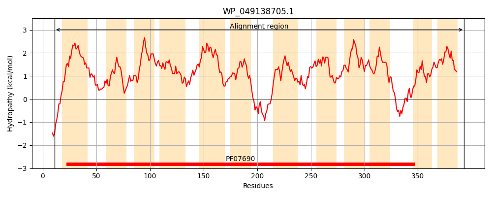
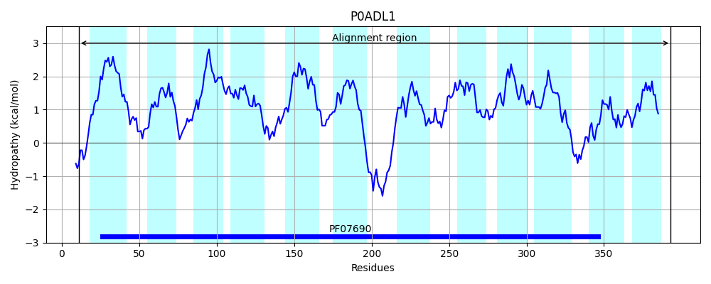
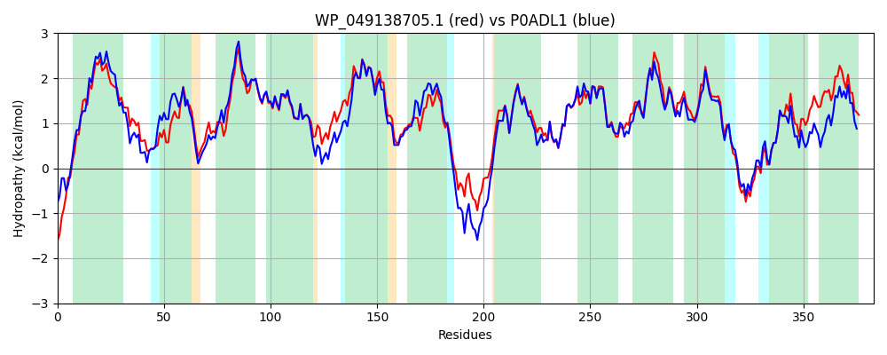

Hit Accession: P0ADL1
Hit TCID: 2.A.1.2.26
Hit Description: gnl|BL_ORD_ID|8755 gnl|TC-DB|P0ADL1|2.A.1.2.26 Purine ribonucleoside efflux pump nepI - Escherichia coli.
Mach Len: 383
e:0.000000
Query TMS Count : 12
Hit TMS Count: 12
TMS-Overlap Score: 12.350000
Predicted Substrates:CHEBI:8639;7H-purine, CHEBI:26399;purine ribonucleoside
BLAST Alignment:
Score: 1569 , Bit scores: 608 bits, E-value: 0.0e+00, Alignment length: 383, Percentage identity: 81
Query: 11 ARELARPNWSAVFAVAFCVACLITVEFLPVSLLTPMALDLGISEGMAGQSVTTTAFVAMFSSLFITSIIGKTDRRYVVILFSLLLTLSCLLVSFADSFTLLLLGRACLGLALGGFWAMSASLTMRLVPMRVVPKALSIIFGAVSIALVIAAPLGSFLGGLIGWRNVFNGAAVMGVLCTLWVLKALPSLPGESASQQQNMFGLLKRPGVMAGMCAIFMAFAGQFAFFTYIRPVYMTLAGFDVDGLTLVLLSFGIASFIGTSLSSVLLKRSVKAALAIAPLVLTACAVALVLWGESKIVASTVAIIWGFAFALIPVGWSTWITRSLSDQAEKAGSIQVAVIQLANTCGAAVGGVALDHLGLLSPLVLSGILMLFTGLLVATKVKV 393
A + RPNWSAVF+VAFCVACLI VEFLPVSLLTPMA DLGISEG+AGQSVT TAFVAMF+SLFIT I TDRRYVVILF++LLTLSCLLVSFA+SF+LLL+GRACLGLALGGFWAMSASLTMRLVP R VPKALS+IFGAVSIALVIAAPLGSFLG LIGWRNVFN AAVMGVLC W++K+LPSLPGE + Q+QN F LL+RPGVMAGM AIFM+FAGQFAFFTYIRPVYM LAGF VDGLTLVLLSFGIASFIGTSLSS +LKRSVK ALA APL+L A+ L LWG KIVA+ VAIIWG FAL+PVGWSTWITRSL+DQAEKAGSIQVAVIQLANTCGAA+GG ALD++GL SPL+LSG LML T LLV KVK+
Sbjct: 11 ADAITRPNWSAVFSVAFCVACLIIVEFLPVSLLTPMAQDLGISEGVAGQSVTVTAFVAMFASLFITQTIQATDRRYVVILFAVLLTLSCLLVSFANSFSLLLIGRACLGLALGGFWAMSASLTMRLVPPRTVPKALSVIFGAVSIALVIAAPLGSFLGELIGWRNVFNAAAVMGVLCIFWIIKSLPSLPGEPSHQKQNTFRLLQRPGVMAGMIAIFMSFAGQFAFFTYIRPVYMNLAGFGVDGLTLVLLSFGIASFIGTSLSSFILKRSVKLALAGAPLILAVSALVLTLWGSDKIVATGVAIIWGLTFALVPVGWSTWITRSLADQAEKAGSIQVAVIQLANTCGAAIGGYALDNIGLTSPLMLSGTLMLLTALLVTAKVKM 393 | Protein Hydropathy Plots: |
|---|
|  |  |
Pairwise Alignment-Hydropathy Plot:
|
|---|
|  |